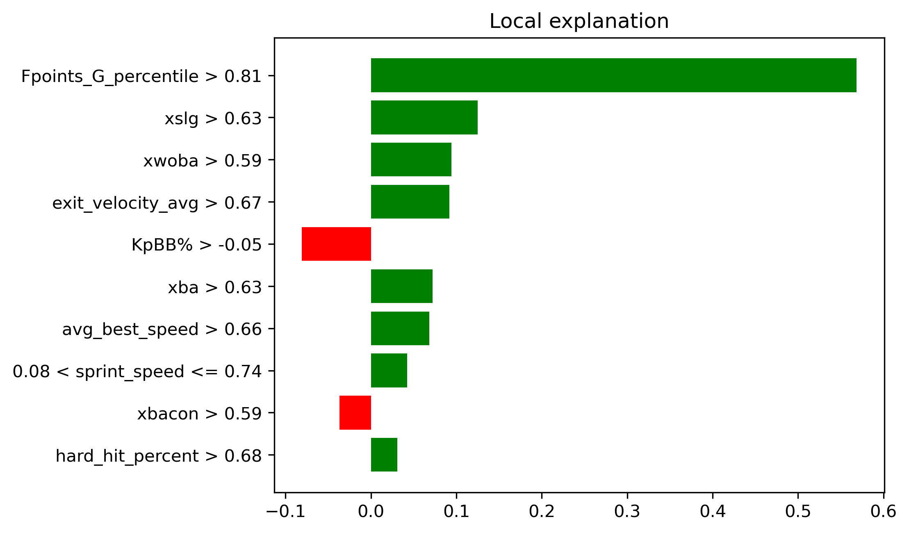
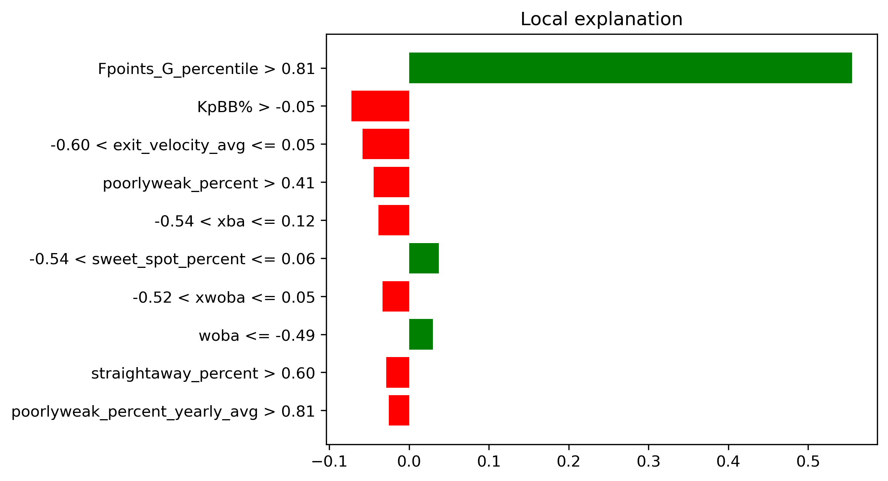
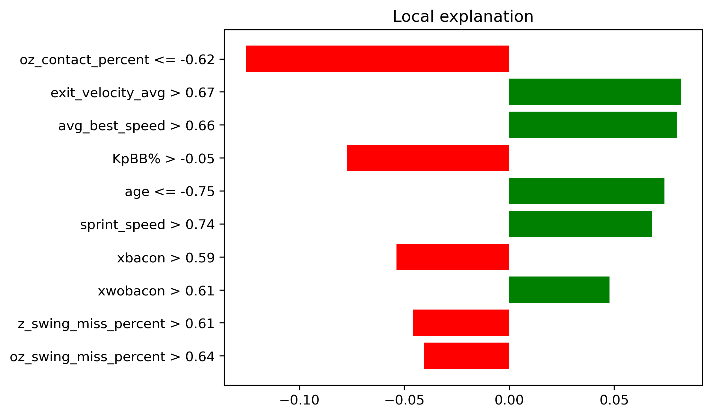

Shortstop#
See shortstop rankings here
Upper Echelon: Fransisco Lindor - NYM (My Rank: 14, ESPN: 17)#
Everyone knows Francisco Lindor is amazing, but he might be even better than we think. Before we even get into fantasy relevance - just sit with how good of a fielder he is at the most important position on the field. After a cold start for his standard in the Big Apple, Lindor has turned it back on the last two year, reaching an OPS above .800 both years. He barreled baseballs at a 13.6% rate (90th percentile) and was above the 90th percentile in xwOBA, xBA and xSLG in 2024, which were his best numbers since 2018. He really has no weaknesses at the plate - he does not strikeout a ton, walks at an average rate, and hits well from both sides of the plate. He has also stolen an average of 30 bags a season over the last two years, being just one SB short of his second straight 30/30 season last year. Don’t forget he will likely hit leadoff in front of Juan Soto and Pete Alonso this season - two of the best RBI hitters in baseball. Lindor is a safe top 15 choice with the potential to rise even further if things go well. 
Sleeper: JP Crawford - SEA (My Rank: 163, ESPN: 273)#
In terms of pure hitting JP Crawford does exactly push the needle. He does however have an approach that caters well for fantasy. He walks a ton (11.5% BB rate last year), and although the strikeout rate was a bit up last season at 22.6% he has previously been adept at avoiding the K. Prior to last years campaigned that was derailed due to a pinky fracture, he produced three straight seasons on an OPS+ above 100. His hard hit% and barrel% have been on the rise over the last few years, and he did underperform his estimators of xSLG and xwOBA by 0.50 and 0.30 points respectively last season. Don’t expect 30 home runs, but Crawford could prove to be a sneaky option if you are clamoring for a shortstop a the end of your drafts. 
Bust: Elly De La Cruz - CIN (My Rank: 96, ESPN: 69)#
One of if not the most electric players in the MLB is a tad less electric in fantasy. Let me set this straight - I love Elly’s game. Who doesn’t want to see a 6’5 shortstop who runs like a man chasing his ex and can hit baseballs to Narnia. He just strikes out way too much to be a top tier option in fantasy with a 31% K rate last year. He also struggles to square up baseball with a 20th percentile squared-up% last season. His kryptonite is anything but a fastball - Elly had a .262 xwOBA against breaking balls and .279 against offspeed last year. He is still young and can fix these issues - but with the hype that surrounds him I would expect him to come off the board even earlier than the 69th spot that ESPN gives him. I wouldn’t blame you for buying into the hype, but I cannot recommend it. 